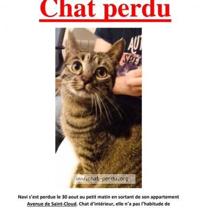

La sémantique au sens large du terme représente l’étude et l’analyse des signifiés d’un énoncé, c’est à dire les mots, leur sens, leur liens les uns aux autres. Mais qu’en est-il de la sémantique visuelle ?
Définition
La sémantique visuelle, c’est l’art de faire correspondre un visuel quelconque (vidéo, flyer, affiche, publicité) à un sentiment que l’on souhaite transmettre au client.
En effet pour qu’un message soit cohérent, il faut que la promotion suive la logique produit et ce sans faille. Pour redécouvrir ce qu’est la logique produit, rendez-vous sur les 4 facettes du mix marketing] dès maintenant.
Si cette promotion ne correspond pas aux valeurs et à la direction choisie par l’entreprise concernant son produit, la campagne risque de perdre les clients du fait de la présence de plusieurs messages contradictoires, ce qui détruit leur processus de décision.
Exemple
Voici deux exemples de sémantique visuelle pour bien comprendre l’importance d’avoir un message cohérent avec sa politique produit (ou service).
-
Dans le cadre du dropshipping, certaines boutiques en ligne proposent la vente de montre de qualité et/ou de luxe. Cependant pour attirer des clients à acheter les montres qui sont souvent des contrefaçons, l’entreprise met en place des dispositifs comme des promotions, souvent allant de 50% à 80%. Sauf que la politique produit des montres de luxe va complètement à l’encontre de la politique promotion de faire des réductions. En effet, le produit de luxe ne doit pas être accessible par tout le monde afin de conserver son statut, il est donc inconscient et contre-productif de réduire son prix.
-
Lorsque vous observez une affiche de chat perdu dans la rue, vous observez que l’affiche est moche, faite à la va-vite sur Word, avec une photo et de la police de couleur criarde. Et bien la encore c’est un bon choix de sémantique visuelle. En effet, cet aspect bâclé et rapide fait écho à une famille triste et dévastée d’avoir perdu son chat qui a donc fait une affiche très rapidement dans le but de le retrouver. A contrario une belle affiche faite sur Photoshop irait à l’encontre du message à transmettre.
